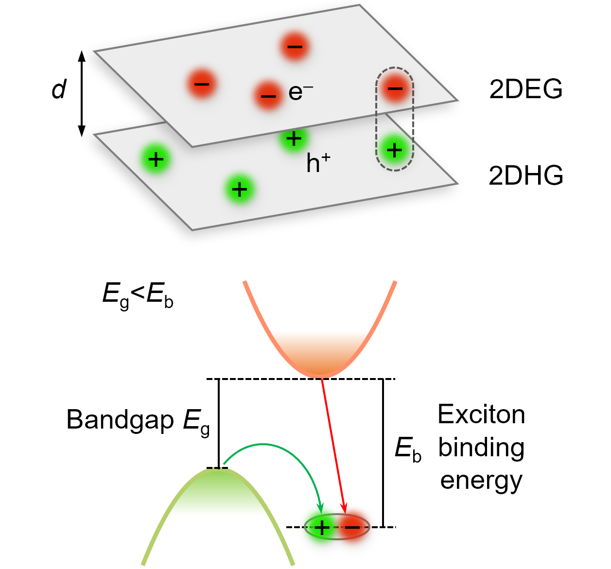
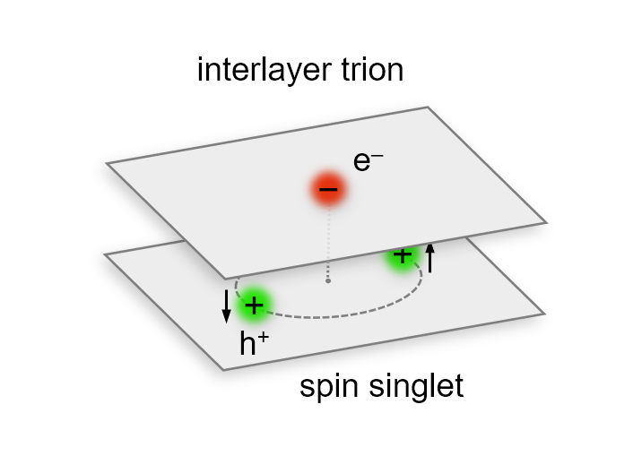
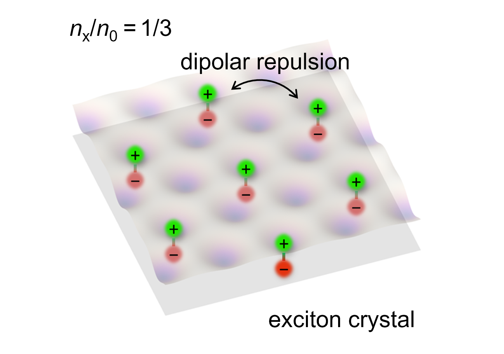
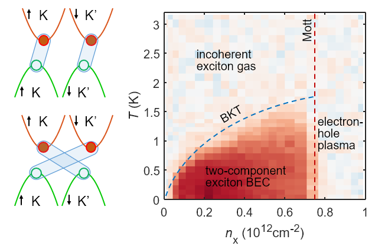
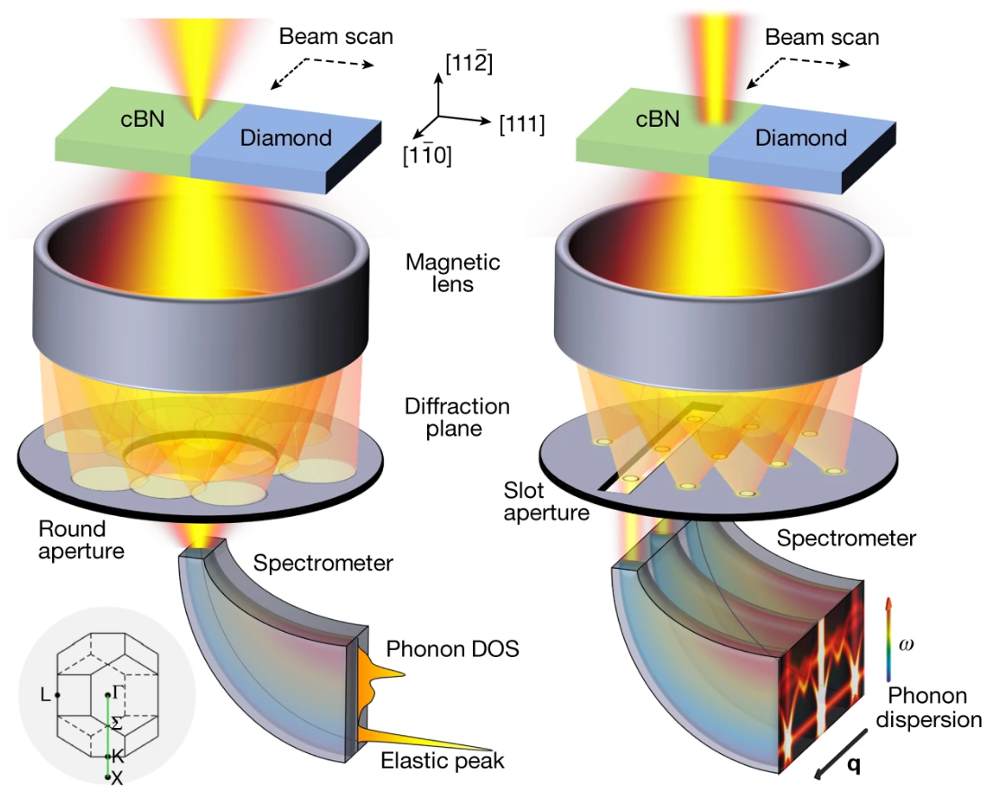

Ruishi Qi
Physics Ph.D. candidate at UC Berkeley working on strongly interacting electron-hole systems in two-dimensional van der Waals heterostructures.
About
I am a Ph.D. candidate in Physics at the University of California, Berkeley. I work in Prof. Feng Wang's group, where my Ph.D. research focuses on strongly interacting electron-hole systems in two-dimensional van der Waals heterostructures. I combine high-quality device fabrication with low-temperature optical and electrical measurements to study interaction-driven phases in reduced dimensions. My current research interests center on excitonic and correlated electronic phases, including excitonic insulators, biexciton and trion fluids, and related many-body states arising from strong Coulomb interactions in 2D systems.
Starting this summer, I will join Stanford as a Stanford Science Fellow, working with Prof. Tony Heinz.
News
- Jan 2026|I am awarded the 2026-2029 Stanford Science Fellow. I will join Stanford this summer.
- Jan 2026|Our paper An exciton crystal in a moire excitonic insulator is published in Nature Physics.
- Oct 2025|Our paper Electrically controlled interlayer trion fluid in electron-hole bilayers is published in Science.
- Aug 2025|Our paper Competition between excitonic insulators and quantum Hall states in correlated electron-hole fluids is published in Nature Materials.
- Apr 2025|Our paper Perfect Coulomb drag and exciton transport in an excitonic insulator is published in Science.
- Dec 2023|Our paper Thermodynamic behavior of correlated electron-hole fluids in van der Waals heterostructures is published in Nature Communications.
- Nov 2021|Our paper Measuring phonon dispersion at an interface is published in Nature.
- Feb 2021|Our paper Four-dimensional vibrational spectroscopy for nanoscale mapping of phonon dispersion in BN nanotubes is published in Nature Communications.
- Jul 2020|I received my B.S. degree at Peking University, with the highest graduation honors: Weiming Scholar, Outstanding Gratuate in Peking University, and Outstanding Graduate in Beijing. I will pursue my Ph.D. at UC Berkeley.
- Jul 2019|Our paper Probing Far-Infrared Surface Phonon Polaritons in Semiconductor Nanostructures at Nanoscale is published in Nano Letters.
Note
Appointments
- Stanford Science Fellow, Stanford University (2026-)
Education
- Ph.D. in Physics, University of California, Berkeley (expected 2026)
- M.A. in Physics, University of California, Berkeley (2022)
- B.S. in Physics, Peking University (2020)
Research experience
- Ultrafast nano-optics group at UC Berkeley (PI: Prof. Feng Wang) (2020-2026)
- Electron microscopy laboratory at Peking University (PI: Prof. Peng Gao) (2018-2021)
Awards and Honors
- Stanford Science Fellow (2026)
- Kavli ENSI Graduate Student Fellow (2023)
- Weiming Scholar, Peking University (2020)
- Outstanding Graduate of Beijing (2020)
- Outstanding Graduate in Peking University (2020)
- Outstanding Undergraduate Research Project, Peking University (2020)
- Beijing Merit Student (2020)
- National Scholarship (China) (2018, 2019)
- Merit Student Pacesetter, Peking University (2018, 2019)
- Southwest Associated University Grand Scholarship (2019)
- PKU Scholarship in Physics (2019)
- First prize in XingCheng seminar for undergraduates (2019)
- May 4th Scholarship, Peking University (2017)
- Merit Student, Peking University (2017)
- Gold medal, Chinese Physics Olympiad (CPhO) (2015)
Research
My research focuses on interacting electron-hole systems in two-dimensional van der Waals heterostructures, with emphasis on excitons, trions, biexcitons, and their many-body collective quantum phases such as superfluids and crystals.
Featured Results

Dipolar excitonic insulator in electron-hole bilayers
Establishment of equilibrium excitonic insulating phases through thermodynamic measurements and perfect Coulomb drag, demonstrating strongly correlated electron-hole pairing.
Science (2025) · Nature Materials (2026) · Nature Communications (2023)

Equilibrium interlayer trion fluid
Demonstration of an electrically tunable interlayer trion fluid, establishing a new interacting quasiparticle platform in electron-hole bilayers with strong Coulomb correlations.

Exciton crystal
Observation of an exciton crystal phase in a moiré excitonic insulator, revealing interaction-driven ordering of composite bosonic quasiparticles.

Two-component exciton condensate
Observation of a two-component exciton condensate in an equilibrium electron-hole bilayer, revealing a multi-component strongly correlated condensate phase in van der Waals heterostructures.
Earlier Work

Interface phonons at the nanoscale
Direct measurement of phonon dispersion at interfaces using electron energy-loss spectroscopy with nanometer spatial resolution.
Preprints
-
Observation of two-component exciton condensates in an excitonic insulatorarXiv:2603.15443 (2026); under revision at Nature
-
Gate-tunable biexcitons in electron-hole-electron trilayersUnder revision at Science
Leading-author research articles
-
An exciton crystal in a moiré excitonic insulatorNature Physics (2026)
-
Orbital dependent Coulomb drag in electron-hole bilayer graphene heterostructuresPhysical Review Letters, accepted (2026)
-
Nature of emergent moiré excitations in MoSe2/WS2 moiré superlatticesNano Letters (2026)
-
Competition between excitonic insulators and quantum Hall states in correlated electron-hole bilayersNature Materials 25, 35–41 (2026)
-
Electrically controlled interlayer trion fluid in electron-hole bilayersScience 390, 299–303 (2025)
-
Perfect Coulomb drag and exciton transport in an excitonic insulatorScience 388, 278–283 (2025)
-
Thermodynamic behavior of correlated electron-hole fluids in van der Waals heterostructuresNature Communications 14, 8264 (2023)
-
Measuring phonon dispersion at an interfaceNature 599, 399–403 (2021)
-
Four-dimensional vibrational spectroscopy for nanoscale mapping of phonon dispersion in BN nanotubesNature Communications 12, 1179 (2021)
-
Probing far-infrared surface phonon polaritons in semiconductor nanostructures at nanoscaleNano Letters 19, 5070–5076 (2019)
Full publication list
Contact
Email: ruishiqi@berkeley.edu
Phone: 510-833-4696
Address: 225 Birge Hall, University of California, Berkeley, CA 94720, USA